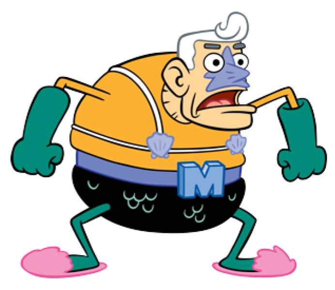

Мій улюблений супергерой: Морський Супермен

Морський супермен - це персонаж з мультсеріалу Губка Боб Квадратні Штани
Чому я обрав Морського Супермена
Губка Боб це мій улюблений мультсеріал, а Морський Супермен у ньому, улюблений супергерой
Основні факти про Морського Супермена
Справжнє ім'я - Ерні
Місце проживання - Бікіні Боттом
Перша поява: 1999 рік
Його суперздібності
Невидимий човномобіль
Додаткові ресурси
Дізнайе більше про морського супермена на фандомі>